JSesh English Documentation
Documentation for JSesh 2.10.5
Chapter 1. Introduction
You are currently using JSesh, which is both an editor for hieroglyphic texts and a toolset for manipulating hieroglyphic texts in Java. As a user, you are probably more interested in JSesh editing and printing capabilities.
JSesh covers most of the Manuel de Codage and can read files coming from a number of other softwares, as Winglyph and Tksesh. Macscribe compatibility has not been tested, and is probably not full.
The manuel de codage is a standard which was created in 1984 for describing hieroglyphic texts in ASCII. It's a bit old by now, and there are various suggestions to improve it (or replace it). JSesh will propose a number of extensions. A description of the manuel de codage can be found here .
JSesh also allows you to edit hieroglyphic texts, either by typing manuel de codage codes, or by a more intuitive menu system. Some manuel de codage features are not available yet through the menus, but you have always the possibility of writing the code directly.
JSesh has a number of output capabilities. It can print a file, or save it in various interesting graphic formats : pdf, jpg, or even as set of html files. Among the possible outputs, one must note the WMF (windows metafiles output). Metafiles are vector images, which means they are well suited for printing. WMF files can be read by almost all word processors.
JSesh, contrarily to tksesh, is not primarily a text database. The text database capabilities of tksesh will be added to JSesh in the future, but I thought it would be better to provide a nice editor/displayer first, in order to involve people.
Chapter 2. Overview of the JSesh Window
 The jsesh window
The jsesh window
Currently, JSesh's working space contains a menu, a main editing window (the "hieroglyphic window" above), and a number of fields. The field termed "Manuel de Codage field" contains the Manuel de codage code for the current line of text (the one pointed by the cursor). You can modify directly this code ; the field termed "current sign code" is used in interractive editing to show the code for the currently edited text.
the field directly right to it is a message field. It isn't of much use currently.
Chapter 3. Editing texts
Mouse Editing
Editing with the mouse is a very simple, but slow process. Usually, you will mix it with one of the two others.
Setting a cursor position
To set the current cursor position, simply click on the hieroglyphic panel.
Inserting signs with menus and palette
The faster way to insert signs is to use the keyboard [the section called “Keyboard editing”], and type either manuel de codage codes or translitteration. However, it is possible to select the signs from either a menu or from the sign palette
The Sign Menu
The sign menus only list the basic signs, from the usual Gardiner categories (with the extra category Ff for signs taken from hieratic. This category was used in the original Gardiner fonts).
If you are working on a Mac, you will notice that this menu is quite slow to appear. The mac obviously doesn't like huge menus like that. Use the sign palette instead (I kept the menu because on other platforms, like Windows and Linux, they can be manipulated from the keyboard, which can make them quite fast to use).
The Sign Palette
The sign palette was created to propose a better solution than the menu. It can display all available signs without any problem, and it features advance search options.
To open the sign palette, use the menu Tools/Hide Show Hieroglyphic Palette.
The basic usage of the palette is quite simple: you select the family of signs you are interested in (using the dropdown list (b)), and then you double click on the sign you want to insert in the panel (e).
Not all signs are displayed (normally, the palette doesn't display variant signs). To display all signs from a family, check the "show all" box (h).
If you click only once on a sign, the sign will be selected.Information about the sign (its code, its values, etc.) will be displayed in the panel (i). More information will be available if you select the "Sign Description" tab (a).
Please note that most information in JSesh in here for searching purporses. In particular, details about what the values means are not fully displayed. For instance, we use "bin" as a value for G37, but only because it is a convenient mnemonic. In reality, the internal format of JSesh allows to store more information about what the values are. Another example is Y1; for this one, we will keep the "sS" mnemonic, and add the probably better "sXA". More scientific information on the sign will belong to the "Sign Description" (which is quite empty right now).
 Sign Palette
Sign Palette
Advanced controls
- b
- The "family selector" holds two special families: "user palette" and "last used signs". See below for more information on user palette. "Last used signs" contains all signs selected by the user in the palette during this session. It's supposed to be usefull if the same signs appears often.
- c
- The "sub family" control allows to restrict the listing to the signs which share certain characteristics. For instance, if you have selected the "God" family, you can restrict the search to "hawk-headed" gods.
- d
- the translitteration filter allows to look for signs using their translitteration. The translitteration used may be the phonetic value of a sign (for phonograms and ideograms), or may be a value typical of a word the sign appear in. If you check the "show all" box, all values known to JSesh will be used (TO BE COMPLETED).
- f
- User palette selector. If you check this box, the currently selected sign will be added to the user palette.
- g
- If you click on the "part of" button, Jsesh will display all signs that contain the currently selected sign (well, if he knows). in the future, it may use the "select all" box to choose how far to go. Each further click will extend the set of displayed signs (the next one will list parts, and parts of parts, etc.)
- j
- select known variants of the current sign. The term "variant" is here used quite loosely. It may be real linguistic variants (as Z7 is a variant of G43, for instance), or it may means "signs which are graphically based on another one". For instance, A17A is a variant of A17 in this meaning, even if its linguistic uses are quite different. Each further click will extend the set. A second click would add variant of variants, etc...
User palette
The user palette allows a user to compose his own list of prefered signs. Adding a sign in the palette is simple: you simply select the sign, and check the "user palette control" (f) in the bottom part of the palette. The content of the user palette is automatically saved, so you will get your palette back next time you start JSesh. Removing a sign from the palette is as simple as selecting it and unchecking the "user palette" control.
All signs selected for inclusion in the user palette will be displayed when the "user palette" special family is selected.
You can help
You will find a description of the files used by the palette as an appendix to this documentation. If you have a good knowledge of hieroglyphs, you can help improving JSesh by extending the informations it uses. Mail the author (serge.rosmorduc AT qenherkhopeshef.org) for more information.
Selecting a zone
The selection stands between the cursor, and what is called the mark. The whole selection is drawn in light blue. Some operations are possible only if a zone of text is selected.
To select a zone of text, you can use a number of ways :
- Mac style : shift-click on a point in the text ; the whole text between this point and the cursor will be selected ;
- Unix style : same, but using right-mouse button. This might change one day if I decide to use contextual menus.
- keyboard selection : shift + left or right arrow selects and move.
- mouse dragging
Adding a sign chosen from a menu
The hieroglyphs menu gives access to the signs of the standard Gardiner list. Simply select a sign, and it will be added at the cursor position.
Grouping signs
This is done using the "Text manipulation" menu. You can group signs into vertical or horizontal groups, by selecting the signs (or cadrats), and choosing either "group horizontal" or "group vertical". Note that you can break the groups with the menu "explode group". All kinds of groups can be "exploded".
"Group Horizontal" has the keyboard shortcut "Ctrl-h"
"Group Vertical" has the keyboard shortcut "Ctrl-g"
Ligatures
JSesh knows a number of "special groups", or ligatures, which are beyond the capabilities of "square" cadrats. For instance, "w" and "t" will likely be arrange like that: 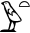 . To achieve such a layout, select the signs you want to ligature, and use the menu Text manipulation/Ligature elements.
However, JSesh doesn't know how to ligature all groups, even though it knows some rather "sportive" ones: ligaturing 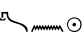 gives  .
.
Complex ligatures
Some ligatures can be considered as the ligature of a sign and a group. Let's consider the group 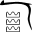 . It can be understood as a ligature between the sign 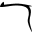 and the group  . Such ligatures can be built with the menus Text manipulation/Ligature group with hieroglyph. or Text manipulation/Ligature hieroglyph with group. In the first case, the group is "in front" of the hieroglyph, in the second case (which corresponds to our example, the hieroglyph stands "in front of" the group.
. Such ligatures can be built with the menus Text manipulation/Ligature group with hieroglyph. or Text manipulation/Ligature hieroglyph with group. In the first case, the group is "in front" of the hieroglyph, in the second case (which corresponds to our example, the hieroglyph stands "in front of" the group.
For each sign, JSesh tries to find two areas. One for "front" ligatures, and one for "back" ligatures. Some sign have their "ligature area" already set. For other signs, it is computed automatically. To tell the whole truth, JSesh tries to see if it can fit a rectangle in the bottom-left area of signs (for left-to-right orientation). This area would be the "start" area. For the "end" area, two places are examined. First, the top-right corner of the signs (like in the ligature, and then a large area in the bottom left, like in the case.
Signs creator can provide other areas, like in 
Please note that a sign can be ligatured at the same time with a group before it and with a group after it.
Editing groups
When you meet a very specific group, one-of-a-kind type, in which you want to place the signs exactly where you want, you can select the edit group menu entry. The edited group will be either the selected group, if there is a selection (overlined in blue), or the last group before the cursor, if there is no selection.
It will open the following window :
 The Group Editor
The Group Editor
You will be able to move the signs, to scale them, and to rotate them. Note that scaling and rotations are triggered by two buttons. To move a sign, click on it and drag it where you want. To rotate or scale it, click and drag one of the small red boxes around the currently selected sign.
Keyboard editing
Entering hieroglyphs
To enter signs with the keyboard, click in the main window (the one that displays the actual hieroglyphic text, not in the one with the so-called "Manuel de codage").
When you type a letter or a number in the main window, this letter or number appears in the small panel in the bottom left panel of JSesh. This allows you to type "Manuel de Codage" codes.
- Lots of signs have phonetic codes, which correspond to their translitteration;
- all signs are accessible through their code in Gardiner's grammar. To find the code, you can look at the "hieroglyphs" menus.
Once the code is typed, you must validate it. To validate, type one of space, ':', '*', '-', enter
The sign will be added to the hieroglyphic text.
Phonetic codes can correspond to more than one sign. For instance, iw corresponds to one of  ,
,  ,
,  ,
,  and 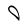. The "official" sign for iw is
and 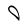. The "official" sign for iw is  according to the manuel . However, you might want another sign. In this case, it's quite simple : press the space bar, and the system will circle through the possibilities, one at a time.
according to the manuel . However, you might want another sign. In this case, it's quite simple : press the space bar, and the system will circle through the possibilities, one at a time.
Your last choice will be retained the next time you type the code in this session.
Grouping signs
The sign you type when validating can be used to group the hieroglyphs. Both 'space' and '-' have the simple effect that the next sign will be added in a new cadrat.
':' and '*' will add the next sign respectively below and besides the last sign entered.
'enter' has two consequences : it validates a sign (if there is one), and it adds a new line.
If no code has been entered (that is, if the code window is entered), the previous grouping sign type will group the last two cadrats. It looks a bit strange, but you will see that it's quite natural. you can use it to group signs as an afterthough.
Exempli gratia
If you want to type the word 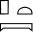pt, you can :
- type 'p', then '*', 't', ':', 'pt'
- type 'p', 't', then '', space (which, in sort, validates the ''), pt, ':', and space.
Direct manuel de codage entry
When a text is displayed, the manuel de codage codes for the current line are shown in a text field
 Direct editing
Direct editing
This field is not here just for the sake of the Manuel beauty. In fact, you can edit its content, and the text in the hieroglyphic window will be modified accordingly when you validate (by typing the Enter key). Note that incorrect Manuel de codage code will be refused.
Specific editing problems
Shading/Hatching
Shading/Hatching is currently a bit complex. The bad news is that it will become worse.
As an option (look at Tools/Edit Preferences), shading can be either the classical "cross-line shading" you can see in old publications, or a light gray background. Although many users prefer the first one out of tradition, the second is indeed typographically superior. Cross-line shading makes signs difficult to read, which is not the case of the light gray background.
Shading comes in a number of flavors. This is due to the Manuel de Codage's history.
A good summary is available in the JSesh sample document (the one which appears when you start JSesh).
But, to tell the whole story:
Originally, there where two shading systems. The first one shaded a whole part of a text. It's the shading you get when you ask "shade zone". In JSesh, it works on the selected text.
The second shading system used shading symbols, used exactly as hieroglyphs. In the original manual, cadrats where shaded by overwriting them with the corresponding shading symbols. You get them from the "shading symbol" menu entry. Thus,
 can be obtained by typing "wn", then adding a shading symbol, and stacking both verticaly. JSesh understands this kind of shading since the beginning, but a menu to use is was only made available in version 2.10.
can be obtained by typing "wn", then adding a shading symbol, and stacking both verticaly. JSesh understands this kind of shading since the beginning, but a menu to use is was only made available in version 2.10.then, around 1994, a new shading system was proposed, which covered most simple cases. It's the one you get with the "Shading" menu. It applies to the current group (the group in front of the cursor), and can be used to shade any quarter of a group.
MacScribe is able to shade quarter of individual signs. In MacScribe, "p##13*p:pt" would have the "p" sign half shaded. A variant of this system is understood by JSesh. The external MacScribe converter software understands this.
A "free" shading system would be nice too. In this case, the outline of the shaded zone would be freely drawn. I plan to add it too (taking advantage of the group editor). But currently, if you need to be that precise, the only option JSesh gives you is to export your file in some convenient format (for instance SVG) and to modify it there.
Shading part of a quadrant
The menu entry in Text Manipulation/Shading can apply to a selection. That is, you can shade the top part of all groups in a selection in one operation (previously, you had to shade each group individually).
More, for people who type texts with lots of lacunas, I have added a popup menu. If you press the "#" key on your keyboard, this menu will appear. You can navigate in it with the keyboard or select entries by a specific letter.
Here is an example. I have selected a part of the text and pressed "#". The popup appears:
 Partial shading popup
Partial shading popup
Now I can select the shading I need by various means (it depends on your computer system). For instance, I can type "3", move in the menu with the keyboard arrows or select the menu item with the mouse. Then, the whole selected text is shaded:
 Partial shading applied
Partial shading applied
Current options to do some tricky shading
If you want, for instance, to add a shaded zone over the middle of a sign, you can now do it. In fact, it's the reason why I added a menu to retrieve the "old" shading symbols.
Let's say you want to create  .
You first need to enter both signs. The shading is added through the menus :
.
You first need to enter both signs. The shading is added through the menus :
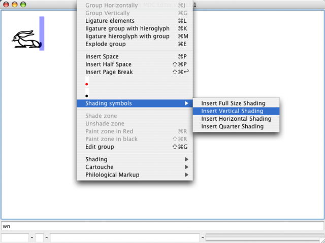Adding a shading symbol
Then, you simply need to use the group editor:
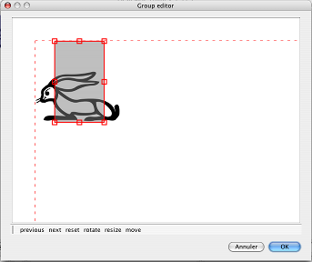Moving shading symbols with the group editor
You should probably enter the shading symbol first, and then the glyph. This way, if your final output format doesn't understand transparency, you will still have a correct rendering.
(By the way, ecdotic marks like [ ... ] are also glyphs. As such, they can be moved in the group editor).
Chapter 4. Graphical export
Copy/Paste
As of version 2.1 and later, copy and paste can be used to transfer data between Jsesh and other applications. You can :
- Launch JSesh twice and cut and paste between the two.
- Copy text and signs to a word processor (it works with both openoffice and Word)
Graphical copy and paste : configuration
Often, one needs two sizes of signs in an application: one for main text, and a smaller one for footnotes. JSesh allows one to keep two configurations for copy and paste. The current size can be selected in the edit menu : simply choose "copy: small size", "copy: large size" or "copy: wysiwyg" (the latter should be used if you want the copied glyph to retain the same disposition as the original ones).
Format choice
A cut and paste involves two softwares : JSesh and your word processor (Word, Openoffice, etc.) Now, JSesh will propose a number of different formats to your word processor, letting it pick the one it likes the most. To control what will be proposed by JSesh, you can use the Format Choice dialog (in the preferences).
 Format choice dialog
Format choice dialog
- RTF : probably the most versatile choice for now. Works everywhere and give reasonable results, especially for hieroglyphs mixed with alphabetic text.
- PDF : currently the most acurate choice. As far as I know, only Mac OS X supports PDF cut and paste, and few softwares understand it. For instance, Word 2004 doesn't. Word 2008 does, however. Textedit has the bad idea of accepting the PDF cut and paste, but transforming the result into a bitmap.
- bitmap : gives a (currently) low resolution bitmap, suitable for web pages for instance.
- plain text : will copy the Manuel de Codage encoding to the clipboard.
Format choices for Mac applications
As of today (july the 24th, 2009)
- On word 2008, usable formats are RTF and PDF, PDF giving the best results. It seems that you can use "EMF" pictures in the RTF export. EMF gives much better results than Mac Pict.
- On word 2004, only RTF is reasonable. It should be configured to use MacPict pictures
- On Nissus and Mellel, one can use either PDF or RTF. As the PDF keeps its comments, it will be possible in the (near) future to cut and paste to and from JSesh. For RTF, you need to use MacPict as output format.
- On Openoffice/NeoOffice, PDF doesn't work yet, so one needs to use RTF. The possible picture formats are MacPict (for maximal compatibility with word) and EMF (with better graphical results). Neoffice 3.1.1 seems to have a bug in EMF support. I stick to 3.0.2 for the moment.
Format choices for Windows applications
(to be completed)
Format choices for Linux applications
(to be completed)
Fine settings
The settings for "large size/small size/wysiwyg" can be changed in the preferences. There are two tabs, one for "small" and the other for "large" size. The "wysiwyg" mode uses the "large size settings".
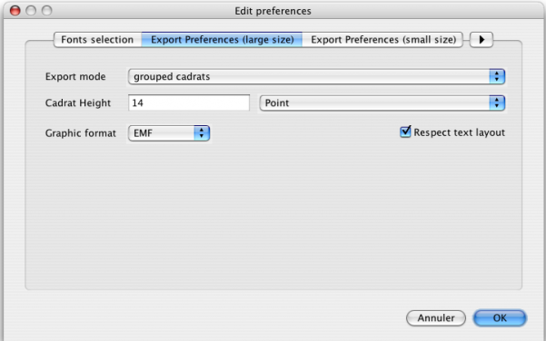Cut and Paste Preferences
"Cadrat height" changes the size of the pasted hieroglyphic text. "Export mode" allows you to chose how hieroglyphic text will be pasted in RTF exports. There are three options:
- as one large picture The whole selected text will be pasted in your word processor as a single picture. This is fine for text in columns, for instance, or if you want to keep the graphical layout. It also seems that most word processor prefer to handle large pictures than lots of small ones.
- grouped cadrats Adjacent hieroglyphic cadrats will be grouped in one picture. The resulting text will alternate normal text and large pictures.
- one picture per cadrat The pasted text will contain normal text and pictures for the hieroglyphic text. But then, each cadrat will be rendered as one picture. This is fine for line-cutting, and might be interesting if you mix text and hieroglyphs.
Cut and paste limitations
Due to technical issues, we have put a limit on cut and paste. It's not possible to paste very long texts in a word processor (you can "export as RTF instead"). We will try to improve it, but we think it's a minor nuisance, as one typically paste small parts of hieroglyphic texts rather than whole large document (the limit is currently 1000 cadrats).
Don't hesitate to write to the author at rosmord@iut.univ-paris8.fr about this (or other problems with JSesh).
Advanced "copy" menu
Normally, in JSesh, you chose the format you want for copy/paste in the preferences menu. But in some cases, you might want to copy your text in a specific format which is not the one you chose. Instead of going back to the preferences, you can use the "Copy As" menu. It allows you to copy the selected text in PDF, RTF or Bitmap.
Possibility to paste hieroglyphic back text to JSesh
Principles and problems
(I'm sorry, this part is a bit technical. If someone is able to write the same explanations in a clearer way, it would be a welcome contribution to JSesh's site)
On windows (and on Mac OS prior to Mac OS X), there is a feature called "Object linking and embedding", wich is more or less an intelligent cut and paste. You copy/paste a document from your hieroglyphic editor into Word, and then if you double click on the pasted picture, it will open the hieroglyphic editor, so that you can change the text.
This is not possible with JSesh, as this kind of capabilities are very system-specific (If you really need it, I understand that it's well supported in Inscribe). However version 2.11 of JSesh provides a poor man's version. Basically the trick (also used in a few other hieroglyphic editors, like MacScribe) is to use the comment field available in some picture formats (like PDF or EMF), and to put the manuel de codage text in this comment field. When the picture is pasted into JSesh, one can simply extract the code.
Of course, this is more or less automatic. But I needed to explain it, because it depends on a number of factors:
- the picture format must support comments, and I need to write the corresponding code. This is currently done only for EMF and PDF.
- the word processor must accept the pasted picture "as is", and not modify it. Modifications usually suppress the comment. For instance, on a Mac, you can paste a PDF picture in MS/Word 2008. But Word will (I guess) transform the picture into its own format, and lose the comment in the process.
All those explanations to tell you that this system won't function with all word processors... and especially not with MS/Word (at least not with Word 2008 on a mac). I'm sorry for that.
Now for the possible solutions
Mellel/Nissus writer and PDF.
If you use Mellel or Nissus writer, and if you configure your cut and paste option to use the PDF format ), you will be able to paste back your hieroglyphs into JSesh.
Simply select the hieroglyphs in your text processor (e.g. Mellel) and copy them... 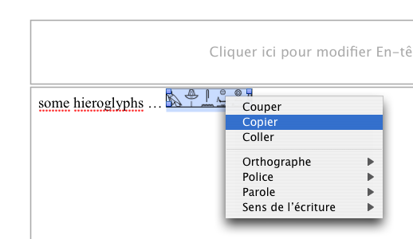Copying from Mellel
Then go to JSesh, and select File/Import/Import from Pasted PDF.
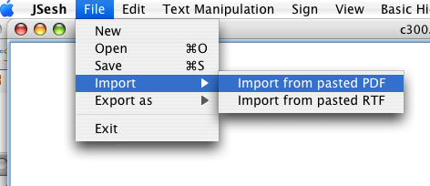Importing PDF
The result will replace your current JSesh document: 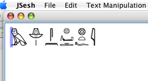PDF import result
NeoOffice (Openoffice) and RTF text
This chapter describes manipulations made on a macintosh using Neooffice as word processor. It works also with Openoffice on Windows and Linux (but it seems to fail with Openoffice 3.1.1 on Mac).
If you configure your cut and paste option to use the RTF format and if you chose EMF as the picture format (see the cut and paste documentation), you will be able to paste back your hieroglyphs into JSesh.
First, you must select "EMF" as the copy format to use.
 Copy preferences
Copy preferences
Text pasted in EMF in Neooffice can then be pasted back in JSesh:
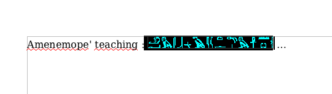Copying RTF
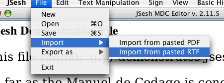Importing RTF
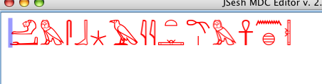Imported RTF text
Now, there is a little problem. We want Neooffice to send RTF text (with the picture embedded in it). This won't happen if you directly select the picture:
 Bad selection in Neooffice
Bad selection in Neooffice
Note that in the "good" selection, the picture is outlined in black.
The direct selection of a picture will result in an (innocuitous) error message: 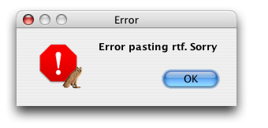Bad selection error message
Now, the correct way to select the picture is to click in front of it in the text and to drag with the mouse. Alternatively (and with less dexterity), you can select the picture by moving the text cursor in front of it and then pressing "shift" and one of the keyboard arrows (it's way simpler to do it than to describe it).
Note that you can select more than one picture:
 Multiple copies
Multiple copies
And you will get one line by picture in JSesh: 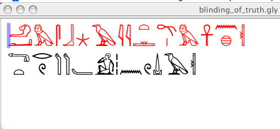Multiple imports
Please note that this only works if your pictures have been pasted from version 2.11 of JSesh, and in the correct format.
Others
I would be very interested to know if other configurations work
Printing
Currently, printing doesn't work, and is not a priority. Use PDF or SVG export instead, and print from Acrobat Reader or Inkscape.
Exporting PDF
To export your text as a PDF, choose export PDF. Explore the various renderings for best results. There might currently be problems with the latin and translitteration fonts.
Exporting Bitmap Pictures
Pictures on computers come in two flavours: bitmaps and vector pictures. For a quick idea of which is which, let's say that bitmaps are usually edited with softwares like photoshop (or gimp if you use free software), and vector pictures are edited using softwares like Adobe Illustrator (or Inkscape). Most softwares can display and read bitmaps, so they tend to be easier to share. Their main problem is that you can't zoom well on them. A bitmap fit for screen display will probably print poorly. However, sharing vector pictures is quite difficult (for no good reason, but it's a sorry state of affairs), so you might end up sending high-resolution bitmaps for printing.
To export a bitmap, choose the " File/Export As/Export as Bitmap " menu entry.
You can export a jpeg or png version of your text. If no text is selected, the whole text will be rendered. If there is a selection, only the selected text will be drawn.
Note that I've experienced memory problems with jpeg file creation. The memory demands of java for images is huge, and the default virtual machine "only" use 64m of memory. You might want to start java with the option -Xmx :
java -Xmx128m jsesh.jar
Exporting RTF
RTF (Rich Text Format) is a portable document format that can be read by most word processors (for instance, MS/word and Openoffice).
To export a bitmap, choose the "File/Export As/Export as RTF" menu entry.
Exporting WMF
WMF export is used to include short passages in a word processor, so it works only on the selection. That's why it's disabled when no text is selected. Once you have selected text, you can save it as a WMF file. Note that in the latest version of JSesh, copy and paste can be used instead of WMF output.
The WMF export works quite fine for the hieroglyphs. However, there is still a lot of work for the text in latin fonts.
Word processor specific issues
Alas, alas, alas, copy/paste and graphic embedding are much more complex than they should be, due to a generalized lack of cooperation between the main actors of the domain. Thus we discuss here the issues related to specific word processors (and similar softwares).
Indesign
(todo)
Openoffice/Neooffice
Copy/paste format
EPS import
EPS is an old format, which should probably be replaced by embedded PDF. Now, only Apple decided to do so. PDF import in Openoffice is discussed below. So, currently, EPS is a very good format for getting a professionnal result. One of the interesting points is that EPS supports colour separation, which seems little relevant for the individual user, but very important for printing workshops.
As of 3.0.1 or 3.2, Openoffice and Neooffice do a good job at importing EPS file. The only problem is that the EPS files are transformed in bitmap files (like JPEG) when creating PDF from Openoffice, which kind of ruins the interest of using EPS in the first place. On Mac OS X, one can however get a good result by using "Print" and then "save to file" in the printing window.
Word 2008
(todo)
Word 97
(todo)
Chapter 5. Tips and tricks on hieroglyphic text encoding
Before describing the manuel de codage itself, I'd like to make a point or two about how one should encode a hieroglyphic text.
Typically, you have a source, which might be a) a printed source, with typeset hieroglyphs, b) a photograph or an acurate facsimile of the original text, or c) handwritten hieroglyph from an egyptological publication (for instance, the Urkunden).
You must decide how faithfull to the original you must be, and it's not a simple question. The first point is that you can be sure that your Manuel de Codage text can't be a facsimile, so, one way or another, it will betray the original. If the text is ultimately a hieratic text, you are already creating something completely different anyway.
Now, when you have a sign, should you look for the most precise variant for it, or use a somehow standardised one? To answer this, you should wonder if this variant is relevant, in the text, and in the use you intend to make of it. For instance, in the Kanaïs texts by Sethi the Ist, the first person pronoun uses many variants of A40 (). If you intend the ltext to be for grammatical study, it's not very relevant. If you wonder whether it's a free play to add diversity to the text, then you may take the time to encode the variants. As a rule, if you are a beginner in Egyptian, I'd advise you to encode the "standard" sign, as it will force you to read the text, not to copy signs. The problem you have when you want to be very accurate is that you will find many cases of variants which have no encoding anyway, and you take the chances to mislead your readers by giving a false impression of accuracy.
When your source is an handwritten version of a text, like in the Urkunden, beware of one point: unless a sign is very particular, an egyptologist will usually draw his glyphs in the easiest way. That means, for instance, he will use V23A () instead of (V22) which is the normal hieroglyphic sign. You must understand that, and when a sign selection is simply caused by the individual hand of the author, render it with the "standard" sign. On the other hand, when the author has drawn a very specific sign form, it might be worthwhile to give it more consideration.
Encoding hieratic texts
The above rule is even stronger for hieratic texts. There is no point in making a distinction between () and , as both are rendered the same in hieratic!
Now, there are a number of peculiarities of hieratic which deserve more care. Those have been pinpointed by sir Alan Gardiner in his article "The Transcription of New Kingdom Hieratic", JEA 15 (1929), p. 48-55. The rendering of hieratic texts should hint at the way the original signs are placed, in order to allow the reader to understand the reason for the rendering, and to go back to the original when necessary.
JSesh includes a number of signs which are usefull for rendering hieratic texts:
| Signe | Code | Utilisation |
|---|---|---|
| |
Ff1 | a sign particular to Ramesside texts, which serves as a kind of "wildcard". this is different from sign Z5 ( |
| Ff100 | a non-standard sign, "dot space filler". Use it to render the various dots a scribe may use, when they are not a ponctuation. | |
| Ff101 | a non standard sign, horizontal space filler. Use it to render various meaningless horizontal sign the scribe may use to fill voids. |
JSesh includes also specific signs for numbers in hieratic texts. In those texts, the "determinative" Z1 is often smaller than the "digit" Z1. Careless rendering might cause 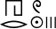 to be read hrw 3 whereas the original has 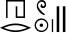, which is clearly hrw 2.
Sign layout
Use the various "ligature" capabilities of JSesh, and if everything else fails, go for the "group editor".
A few interesting points:
- In the group "M17-M17", the signs should often be closer than the standard spacing of JSesh allows (actually, this is already stated by sir A. Gardiner in the catalogue of his fonts). If one writes i*i:k (that is, two yod grouped horizontally, and a "k" below them), the group JSesh creates is
 . To obtain the better layout: is simple: you only need to ligature the two yods (type "i" "&" "i", for instance).
. To obtain the better layout: is simple: you only need to ligature the two yods (type "i" "&" "i", for instance).
Chapter 6. Extending the sign list
Introduction
From version 2.0beta onward, users of JSesh can create their own signs. A sign editor and an elaborate database system are planned in the future, but, on a more practical sign, it was decided to allow one to import signs created with various softwares.
So : a) JSesh has currently no sign editor but b) JSesh can import signs from :
- true type fonts (see fontforge for a free editor) ;
- SVG files : SVG is a relatively recent format for vector graphics. It's very powerfull and complete. Currently, JSesh understands SVG files if the sign is drawn in black over white. You can edit SVG files with a number of programs; one of the best free ones is Inkscape, which has the advantage of being multi-platform.
For compatibility with my previous software (tksesh), I can also read: * font files exported from tksesh (.tml files) * font files from the GNU font utils (.bzr files). Both types of files can be edited with the fontedit software, included in tksesh. But this is of little interest for the generic user.
Importing new glyphs
Choosing a folder for your signs
In order to be able to add new signs, you must first choose where they will be stored on your computer. To do this, simply select Tools/Edit Preferences
In the "Font Selection" tab (currently the only one available), enter the folder you want to use in the "Hieroglyphic font directory" field. You should create an empty folder for this specific purporse.
 Creating a folder
Creating a folder
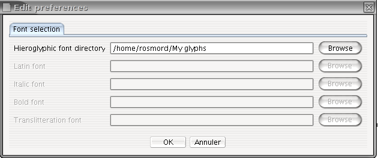The Folder is Selected
You only have to do this once. Next invocations of JSesh will use this folder.
Actual sign insertion
To add new signs, you should import them from a file created with another software, and then assign new codes to the created signs. The sign importing interface can be started from the menu Tools/add new signs .
Sign importing is done in two phases :
- you import a picture or set of pictures from some file (svg drawings, truetype fonts, etc.)
- you assign a code for each sign you have imported, and then you insert the new sign in the JSesh list of signs.
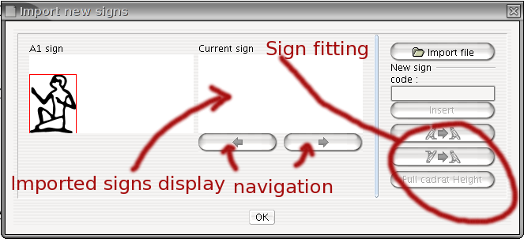New signs importing interface
Importing drawings
Importing drawings is easy. JSesh can read: * true type fonts * .tml and bzr files, which can be created with JSesh's forerunner, tksesh. * SVG files
Simply click on the "import file" button, and select the file which contains your picture(s). You can use the navigation buttons (those with arrows) to browse the available signs.
Fine tuning your signs
In some cases, the size or orientation of your signs won't be correct. For instance, in the picture below, the duck is too large and its orientation is wrong.
 Fine Tuning
Fine Tuning
You can correct this :
- the buttons
 and
and  can be used to change the sign orientation;
can be used to change the sign orientation; - the button "Full cadrat height" gives the sign the same size as the A1 sign;
- if you click on the sign's window and drag the mouse, the mouse position will set the sign's height.
Attaching codes to drawings, and inserting them in JSesh
Once your sign is correct, it's time to give it a name. In a number of cases, JSesh will have guessed one, but this doesn't mean the sign has been registered in its list. Nothing is done when as long as you haven't pressed the insert button.
Except when you are creating signs which are already documented in the Manuel de Codage (for instance, because they are not available in JSesh), you should first get a user ID, which will differentiate your signs from the signs created by other users.
to get an uid, send an email to < rosmord@iut.univ-paris8.fr > . Note for tksesh users: the uid is simply your tksesh id.
Be carefull when giving signs a name. You want your files to be readable by anyone, so be faithfull to the "Manuel de codage". Our current suggestions are the following.
- If you create your own version of a sign in the Manuel (either because it isn't available in JSesh yet, or you don't like the default sign provided, use either the standard Manuel de codage for the sign, or use the following notation: US uid + gardiner code, where uid is the user id.
- When you create a sign which you consider as a variant of a standard sign, you should build its name like that: USuid+Gardiner Code+"VAR"+VARIANT CODE where : Gardiner Code is the standard Manuel de codage code for the base sign and VARIANT CODE is usually an uppercase letter.
- The Ramesside usual form for the hare has a Seth animal tail. If I want to distinguish it from the "normal" sign, I can call it US1E34VARA.
When the sign you create corresponds to a completely new sign, give it a code of the form: USuid+Gardiner Category + NUMBER +"XT"+OPTIONNAL VARIANT CODE
You are free to choose the number you like, but I would suggest you try to find a logical layout. It would also be better if this number does not correspond to a "standard" sign (to avoid confusing innocent users of other softwares), so you can for instance start your numbering at 1000. Note also that the number should not contain leading zeros. The Category should be correct, and if you really don't have a clue, you should use the Aa category. "Ff" is reserved for signs used specifically when transcribing hieratic.
Example : the Harp Louvre E 116 A has recently been published by C. Barbotin (La voix des hiéroglyphes, p. 66-67), and in its text appears the unknown sign . I can create this sign, and give it, for instance, the code US1Aa1000XT. On the other hand, the Israel Stela contains a sign which is most probably a griffin, but does not correspond to any registered griffin sign in the manuel. So I gave it the code US1E162VARA, because E162 is a griffin sign.
- Using this system when importing texts from other softwares: it is possible that other softwares provide their own "non standard" codes. If you want to import texts from those software into JSesh, you might need to give a name to the new signs they contain (note that fonts are usually protected by copyright laws, so you will need to redraw the signs yourself, either by adaptating existing JSesh signs or by finding a picture of the signs in original hieroglyphic sources). For compatibility purposes, the following user codes can be used for other softwares: winglyph 1000 macscribe 1001 inscribe 1002 got 1003 visualglyph 1004 If you think of other softwares I should add, please tell me.
standard manuel de codage code. You will find these codes in Hannig's WB, for instance. A number of lists are also available on the web. Please, note that using the codes is one thing, but that the actual signs drawing in the fonts of other softwares are legally protected. So, have to come with you own versions of the signs, either from actual sources or by re-creating them. You will find more information on signs drawing in the next section. In our example, your duck would replace the normal one, so it would have code "G39".
We suggest that, if you create a sign with an "normal" gardiner code, you also give it an user sign code. This way, you will be sure to keep it even it a sign with this Gardiner code is later added to the software.
Note that for compatibility with tksesh, we also support arbitrary "user glyph codes". These codes correspond to the codes tksesh gave to new signs. User glyph codes have the form UG id M mid N sid , where id, mid, and sid are numbers. Avoid using those codes for now.
Figure 6.4. Inserting the duck sign as UG1M2N0
 Inserting the duck sign as UG1M2N0
Inserting the duck sign as UG1M2N0
When your sign is ready, click on the insert button.
Creating a sign with Inkscape
Introduction
JSesh doesn't include a hieroglyphic editor yet. However, it can include signs drawn with a number of other softwares, like fontforge and inkscape. Even if a sign editor is added, this functionality will be kept.
In this tutorial, I show how to use the Inkscape software to create a new hieroglyph.
Drawing a new sign is a rather long and tedious task. It requires a basic understanding of vector graphics (Inkscape, adobe illustrator...), which is not trivial, and it also requires a lot of work anyway. Not only should you draw nice signs, but those signs should blend with the other fonts.
A few notions about vector drawing
Drawing vectorial pictures requires some understanding of what it's all about. We will write something about it later (except if some kind soul can contribute a nice free-of-right tutorial).
Requirement for JSesh-usable signs : you should draw your signs as black filled contours on a white background. The JSesh import module can read non filled contours, but the import will give better results with filled contours with zero width. Inkscape is able to convert curves into contours, so it's not a very heavy requirement.
Creating a background image
You can start by getting a picture of the glyph you want to create. This picture might be a line-drawing, or a photograph from an actual glyph. You want the black lines of your sign to be readable, so change the colors if needed (for instance, if you have a line drawing of the sign, color it in light gray). Our example will be a low resolution rendering of sign C102 (seated Ptah with Was) from Israel stela. The original bitmap is  . With a drawing program, we have dimmed the picture to get
. With a drawing program, we have dimmed the picture to get
Draw the outline
We now start Inkscape, and import the bitmap drawing in it. Create a new layer, call it "work". That way, we won't disturb the bitmap drawing.
We are then going to draw a rough outline of the sign's shape.
As we are not great drawers, we use the "Bezier curve" tool to do it. We get the following result:
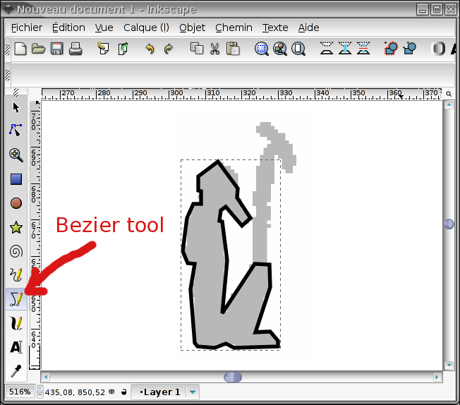First sketch
Note that we have selected "no fill" and a small contour width. We have also left the "Was" sign alone.
Fit the outline
Straight line segments won't make a great sign. So we convert some of them to curve, we add new points if needed, etc...
We start with the head... 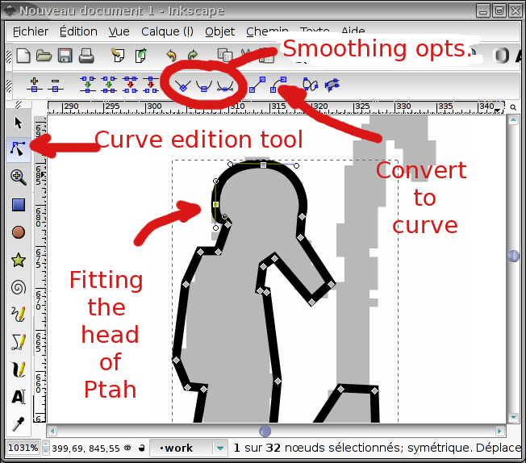Fitting Ptah's head
And here is the result: 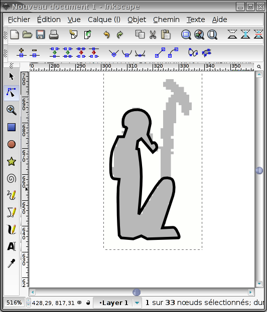Ptah outlined
Working on details
We want our signs to be readable at small size, so we won't fill to much details.
Ptah's beard1
The outline of Ptah's body will be enlarged to make the final sign. But we would like the beard to be filled. Hence, we must separate it from the rest of the drawing. This is done by selecting the control points which separate the beard from the body:
 Controls points for the beard
Controls points for the beard
And then selecting the "Break apart" entry in the "Path" menu, which gives us two objects : the beard and the rest of the body.
We can then fill the gap we have just created (and give Ptah a chin :-). 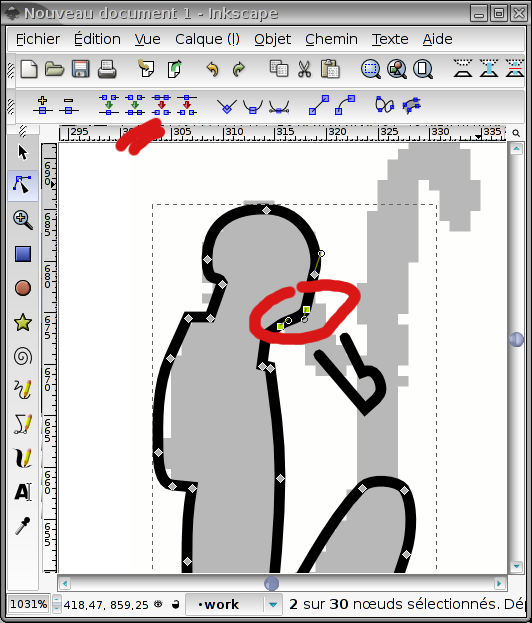Separating the beard
Now, the beard should also be closed. We edit the fill and stroke characteristics of the beard, and we give it a solid black filling, and no stroke. If the beard is too thin, we will be able to dilate it with the "outset" action of the path menu.
Ptah's necklace counterpoise
For this one, the original scan is a bit rough. We dig some iconography, and we come with a two parts necklace counterpoise.
 Ptah figure in Beit el Wali
Ptah figure in Beit el Wali
The necklace is made of two parts: a string, and the counterpoise itself. The string is a simple curved stroke, and the counterpoise is a filled path.

We want to join them into one object, which will be a filled path. To do this, we first convert the string into a stroke.

We then select the two parts of the necklace, and use the "union" operator in the "path" menu.

Choosing the right line width
At this stage, you might want to save your work twice. Once as a backup, and, one, of course, as your working file. Now, select the main drawing, and choose a reasonable stroke width for it. It should mix well with the rest of the fonts. It might be interesting to zoom out in order to see the sign as it will be rendered.
Uniting everything
Now, get sure all strokes are transformed to path, and use the union operator on them. You should get: 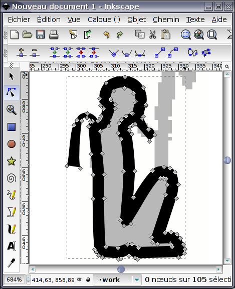
I strongly suggest you keep a backup version of your sign in which strokes are not tranformed to path, it will allow you to rework your sign more easily, or to reuse it as part of other signs. That's what I do for my Ramesside fonts. See http://www.iut.univ-paris8.fr/~rosmord/JSesh/hieroglyphs/Ramessides/Sign... for the drawings and http://www.iut.univ-paris8.fr/~rosmord/JSesh/hieroglyphs/Ramessides/Font... for the usable signs.
Adding other details
Using the same techniques, we get to the final result:
 Final Result
which we save under the name C102.svg .
Final Result
which we save under the name C102.svg .
Final comments
From a rather low resolution picture, we can get a decent-looking glyph. Remember that the sign will be rather small, and don't add too many details (giving the possibility to increase the sign's details with its size is an interesting option, which is used in the Gardiner's lead fonts). Try to mix with the existing signs.In fact, if you have SVG sources for similar signs, try to reuse them (volonteers to create a complete font ?).
The sign given in this example is not too good an example. The "Was", for one, is too high, and the sign won't mix well with the existing fonts. So we should make the scepter shorter. In general, our Ptah is too lean compared with the other signs. Keeping intermediate stages of your work will allow you to correct things more easily. For instance, if the strokes are too fat, if you have kept a version of the sign where the strokes are still strokes, and have not yet been replaced by paths, the correction is very easy.
-
in this case, we gave Ptah an osirian beard, which is an error. ↩
Advanced Informations in Inkscape
Introduction
JSesh has now a relatively advanced ligature mechanism, which is not as good as the one in RES, but give reasonnable results in most cases. In many cases, JSesh is able to "guess" where ligatured groups should fit, but it can also do with some extra help. This help can be provided in the sign's SVG file itself, and we decided to use the mechanisms of inkscape for that.
Ligature zones
For each sign, JSesh will try to compute two ligature zones, one for ligatures of groups before the sign, the other for ligatures of groups after the sign. Those zones can be computed automatically, but the sign author can also provide them.
 The A17 sign with its two ligature zones
The A17 sign with its two ligature zones
to create one of the two ligature zones in inkscape, do the following:
- create a rectangle where the group should fit. Note that the whole group will be scaled to fit there, so draw it large enough. I usually draw these rectangles in red, but it's only a convention.
- open the contextual menu for the rectangle (right-click over the rectangle), and select object properties . You will get the object properties window ( Figure “Zone Properties” below.) Define the Id as either "zone1" or "zone2". Don't forget to click on the Define button to validate your modification. Also clear the label (more on this in the section called “Ligature zones gravity” ).
Admitedly, we are using the id and label information in a way they are not supposed to be used. The reason for this is purely pragmatic. It's far easier to do things that way, as the sign creator has no need to know about the inner organization of the XML format.
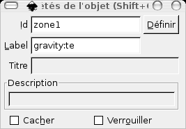Zone Properties
Ligature zones gravity
The ligatured group will go somewhere in the ligature zone. But where exactly ? It can stand in the middle of the area, or stick to one of its sides. In fact, the behaviour of the layout algorithm is not always the same. In , the "w" tends to fit on the bottom left of the rectangular area. In  , the U36 sign is more or less centered, both horizontally and vertically. JSesh allows signs authors to design the behaviour of "ligature zones", in the following way. Remember the label of the previous paragraph? You can set it to
, the U36 sign is more or less centered, both horizontally and vertically. JSesh allows signs authors to design the behaviour of "ligature zones", in the following way. Remember the label of the previous paragraph? You can set it to
gravity: gravity specifications.
where gravity specifications can contain * s or e to ask the group to stick to the start side or to the end side of the zone (start and end are taken from M.-J. Nederhof's RES, and avoid the use of "left" and "right", which are not really usable for hieroglyphs!). If neither "s" nor "e" is specified, the group will be horizontally centered, like in . * t or b to ask the group to stick to the top or bottom of the zone. If neither "t" nor "b" is specified, the group will be vertically centered.
In Figure “Zone Properties”, gravity:te means that the group which would be ligatured in zone1 (in front of the "child" sign) would stick to the top of the red rectangle, and stay near the sign, for instance 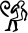.
Appendix A. The current sign description system
It is possible to document the hieroglyphs (and in particular the new signs) so that the the palette can handle them in better ways. This is of course useful for your own new signs, but also for "standard" JSesh signs, as the signs information provided by JSesh is currently very partial. User input would be most welcome here, and above all user input by professionals.
The main feature of version 2.4.15 of JSesh is the availability of a user friendly editor for adding information about signs. Starting the sign description editor
The sign description editor is a separate program. To start it:
- on windows, there is a shortcut for it
- on linux, there should be one too
- on mac, go to your JSesh installation folder. You will find the editor in the "
bin" folder. It's calledsignInfoEditor.command.
Please note that you can play and test the editor at will, as long as you save nothing. When you save, the result will be used the next time you start JSesh.
Editing the sign descriptions
The signs are defined by the following information:
- The Transliterations associated with the sign
- The signs which are part of this sign. For instance, A6 contains a W54 sign
- The sign(s) of which the they are variants
- Descriptions in free text of the sign, which may include for instance bibliographical remarks
- Tags are short description items attached to the signs, and used to select them. For instance, "enemy" is attached to signs which represent an ennemy.
When you start the sign description editor, it automatically read the standard sign descriptions as well as your own descriptions. You can then add or change data, and save the result (simply by choosing "save" in the menu). Note that the editor will prevent you from changing the information which is stored in the system sign descriptions.
An important feature of the editor is that you can use the sign palette (from the tool menu) to select signs.
The main window
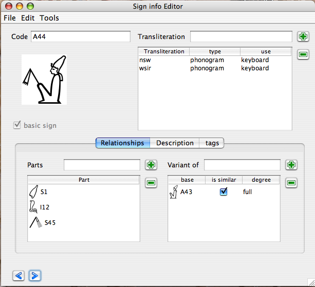The Main Sign Info Editor Window
The sign info editor main windows allows one to edit information on a given sign. Selecting the sign you want to work on can be done in many ways. You can navigate with the arrows on the bottom of the window, type the sign code in the "Code" field, or simply drag and drop the sign from the palette. Once a sign appear, you can add information about it.
The "basic sign" check box is used to say that the sign should appear in the sign palette even if "show all" is not selected.
From this window, you can edit the sign transliterations, and many other things. The bottom part of the window gives access to three kinds of information: relationships between this sign and other signs, free text description of the sign, and tags. Transliteration
It is possible to associate a number of transliterations with a given sign. Transliterations can be used in various contexts: to find a sign (in the palette, or typing the transliteration directly at the keyboard), or simply for informative purposes, for uncommon transliterations.
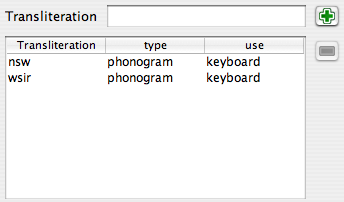The Transliteration Editor
To type a new transliteration, simply press the "+" button. If you enter some text in the transliteration text fied, this text will be used as the new transliteration.
If you want to suppress a transliteration of yours, select the line, and press the "minus" button. This button is gray if no line is selected, or if the selected line can't be deleted.
You can then fix the "type" and "use" values.
I'm not sure whether or not the "type" is useful, and it's currently not used by JSesh. The "use" column is, on the other hand, quite important.
The "use" explain in which context this transliteration is used in the software. Note that each level of use in included in the next one. For instance, if you chose "keyboard", the sign will be also used in "palette" and "informative" contexts.
types
phonogram :
- ideogram
- should be used both for simple ideograms (those followed by Z1), and for so-called phonetic determinatives, which are really ideograms in disguise.
- abbreviation
- use for signs which are actual abbreviations for words. They are not normally followed by Z1 in writing. Exempli gratia: G37 can be used as abbreviation for "Sri".
typical :the sign is typical for some word. Often useful for some determinatives. I use it for G37's value "bin". use
- keyboard
- the sign will be accessible through this transliteration in JSesh when using the keyboard to enter signs. For instance, D54's transliteration "iw".
- palette
- the sign will not be accessible from the keyboard through this tranliteration, but will be accessible through the palette. Note that if a user uses transliteration to access a sign in the palette, he will be able to access it through its transliteration afterwards.
- informative
- the transliteration is given only for informative purposes. It will appear in the "value" field of the palette, but that's all.
Part of sign editor
The part of sign editor allows to describe the elements of a sign in terms of other signs. For instance, the king of Upper Egypt figure A44 wears a white crown, holds a nekhakha scepter, and wears also an uraeus. All of those, in turn, are hieroglyphs. Note that you don't need to list all parts. For instance, if a god wears the Atef crown, which in turn contains the Maat Feather, don't list the feather. It's already given as a part of the Atef (thanks to J. Hallof for this remark at the Oxford 2006 conference).
 The parts of sign list
The parts of sign list
Variant editor
 The variant editor
The variant editor
The notion of variant is a tricky one. In fact, it's not that well defined, and, worse, its useful meaning may depend on the context. There are in fact two notions. One is graphical. A graphical variant of a sign is a sign which looks like another one. Another notion is linguistic. A sign is a linguistic variant of another one if it has the same values and uses. The two notions often overlap, but not always. For instance, Y2 is both a graphical variation of Y1, and a linguistic variant thereof. On the other hand, A17A is only a graphical variant of A17. It doesn't have the same uses at all; and Z7 and G43 are linguistic variants, but not graphical variant at all.
These notions will be used by JSesh both for the sign palette (with its "variant of " button) and for the search system. It may be usefull, while searching for words with G43, to retrieve those with Z7.
- is similar
- is checked if the signs "look the same".
- degree
-
list how close the relationship between the two signs is. It can be one of :
- full: a full variant of a sign S is a sign with the exact same uses and values as S.
- partial: the uses overlap significantly. Usually, the variant would cover some of the uses of the original sign.
- other: other kinds of variants. For instance, D36 (the arm) can be considered as a variant of D37 (the sign "rdi"), in some contexts, but the two signs have a very distinct identity.
- no: the sign is not a linguistic variant at all
- unspecified: you don't really know, or don't have the time to bother.
Description editor
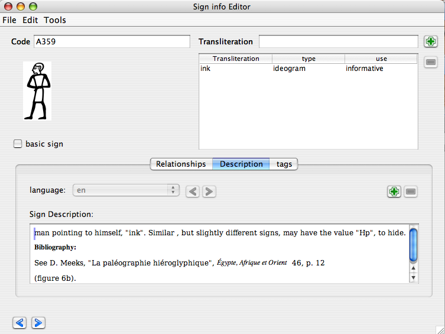Free-text Description Editor
This field allows free text comments for signs. The most important use for this is to document uncommon signs, giving bibliographical references about them, and in general helping the user to select the best possible sign. If you want your sign description to be included in the distributed version of JSesh, they should have bibliographical references to back up their claim. Please also note that JSesh is a free software, but that it must respect copyright. So, this is not the place for blind copying of the sign lists of the usual grammars (it doesn't mean of course that you can't use them as sources). You can write descriptions in multiple languages, although it would be better if there were an english version for each sign.
Tag list editor
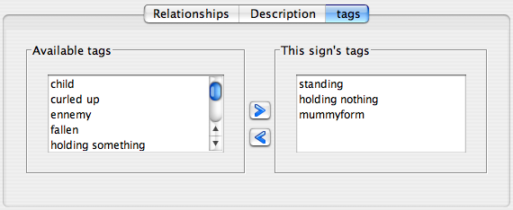The Tag list editor
This window allows to describe the sign in terms of various short descriptive words called "tags". Those are available in the palette to select sub-categories of a given family. For instance, "standing" characters (obviously, the tags used here do not apply to A44). The left window displays all available tags, listing first those which are already used for this family, and then the other tags. The best way to tag signs is to look at similar signs, and see how it's done.
I'd like to draw your attention toward some very useful tags, which are a bit different. Those are "tall narrow sign", "low broad sign", and "long narrow sign". Those tags are used as special families in JSesh palette.
To add a new tag to a sign, simply select the tag in the left list, and click on the left-to-right arrow. To remove a tag, use the same principle. Note that you can't remove tags which are given in the "Official" JSesh list.
The tag creation window
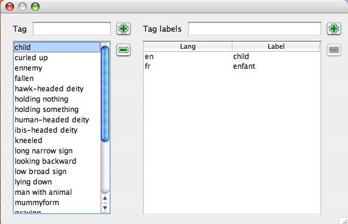The Tag Creation Window
This window (accessible through the tools menu) allows you to create new tag, and associate multilingual translation with them. Those translation are not currently used.
The menus
File
- Open user default file
- opens the file which contains your own definitions for signs. Those will automatically be used by JSesh the next time it's launched.
Save :saves your work in your user definition file. As long as it hasn't been done, your file is unchanged.
Clear :create a brand new workspace, with no data in it but the "official" one. Your user file will in any case be changed only if you save your work.
Edit
- copy
- copy this sign's definition for future use
- paste
- paste the data copyied for another sign into this sign definition. Very usefull when dealing with close variants.
Tools
- Display/Hide Palette
- allows to open the sign palette, for selecting signs (by drag and drop)
- Display Tag Editor
- open (or closes) the tag editor window, for creating new tags.
Contributing your sign description to JSesh
Your sign descriptions are stored in a file called signs_definition.xml, which is placed in:
(Your home directory)/Library/Preferences/JSeshon macintoshes. For instance:/Users/rosmord/Library/Preferences/JSesh/signs_definition.xmlon my machine.c:\Documents and Settings\YOUR LOGIN\JSeshDataon windows (basically, JSeshData in your personnal directory). Normally, the JSeshData directory is created by JSesh, so you can search for it if you have doubts. For instance, C:\Documents and Settings\Rosmord\JSeshData.$HOME/.jseshon linux.
To contribute your sign descriptions to JSesh, simply send me this file. I will decide what can go in the general JSesh distribution. There are many problems I must take into account: the software must remain general enough, correct enough, and I must avoid copyright infrigement.
Appendix B: Technical information on the sign description file
Beware: technically explicit content. Pure souls, avert your eyes. A more user friendly system has been created.
Alternatively, you may directly edit your file description file. You need some kind of simple editor to do this : The notepad might do on windows, and softwares like TextWrangler can be used on Mac OS X. XML files are made of plain text.
JSesh won't accept badly formed files, so you may find yourself unable to launch JSesh. If this is the case, either correct signs_definition.xml, or rename it to something else, so that it will be ignored. In the future, I will add a user friendly editor, but I won't do it until the format is completely defined.
The file must have the following form:
<?xml version="1.0" encoding="UTF-8"?>
<!DOCTYPE signs PUBLIC "-//ORG/QENHERKHOPESHEF//DTD SIGNDESCRIPTION 1.0" "sign_description.dtd">
<signs>
<!-- here your signs definitions -->
</signs>
It is important to have exactly this content, specially the DOCTYPE line.
Here is a small example (actually, a part of JSesh standard sign description file). This file describes signs C1 and C1A. You see that they are classified in a number of categories. They are both human-headed deities and seated characters. The translitteration of C1 is given. We have provided one for C1A as well. The code "relevance='1'" means that this translitteration is here only for informationnal purporses. Actually, the XML format has been prepared to accomodate a lot of different data, which is not really used yet by JSesh, and I am very interested in getting suggestions about it. The definition for the format (its "dtd") is given just after this appendix.
<?xml version="1.0" encoding="UTF-8"?>
<!DOCTYPE signs PUBLIC "-//ORG/QENHERKHOPESHEF//DTD SIGNDESCRIPTION 1.0" "sign_description.dtd">
<signs>
<!-- As C is the most complete part of JSesh fonts now, we try to cover it fully. -->
<tagCategory tag="human-headed deity" label="human-headed deity"/>
<tagCategory tag="hawk-headed deity" label="hawk-headed deity"/>
<tagCategory tag="ibis-headed deity" label="ibis-headed deity"/>
<tagCategory tag="ram-headed deity" label="ram-headed deity"/>
<sign sign="C1">
<hasTranslitteration sign="C1" translitteration="ra"/>
<hasTag tag="human-headed deity"/>
<hasTag tag="seated"/>
<contains partCode="N6"/>
</sign>
<sign sign="C1A">
<similarTo baseSign="C1"/>
<hasTranslitteration translitteration="ra" relevance="1"/>
<hasTag tag="human-headed deity"/>
<hasTag tag="seated"/>
<contains partCode="N6"/>
<contains partCode="S40"/>
</sign>
</signs>
Note that tags must be defined before they are used (as tagCategory). A tag has a name and a label ; it is indeed possible to define labels in multiple languages, although this is not really used by JSesh now.
Sign description DTD
For the more technically-oriented, here is the current DTD used for sign descriptions. It is still experimental, and has already changed since version 2.4.13.
<!-- DTD used to describe signs characteristics. -->
<!-- CATALOG NAME : "-//ORG/QENHERKHOPESHEF//DTD SIGNDESCRIPTION 1.0" -->
<!ENTITY % signInfo "variantOf|hasTransliteration|partOf|contains|signDescription|isDeterminative|hasTag|phantom"
>
<!ELEMENT signs (sign|determinativeCategory|tagCategory|tagLabel|%signInfo;)*>
<!-- The sign element is optional, but allows to have a better structured file. -->
<!ELEMENT sign (%signInfo;)* >
<!ATTLIST sign
sign CDATA #REQUIRED
alwaysDisplay (y|n) 'n'
>
<!--
The notion of variant used here is somehow ad-hoc.
The problem of variants is that there are two different notions behind it, both useful in our software.
The first notion is LINGUISTIC variant. A sign is a linguistic variant of another one if it has the same uses.
For instance, Y2 is a linguistic variant of Y1. Now, Y2 also "looks like" Y1. We will call it a "graphical variation".
Both notions are independant, though statistically linked. For instance, Z7 is a linguistic variant of G43, but not a
graphical variation thereof.
the notion of "looking like" another sign is covered by the "isSimilar" attribute.
In lots of cases, especially for determinatives, the signs are not always fully substitutable one for another.
To allow the use of 'variant' information in searches, we introduce the "linguistic" attribute.
let B be a variant of A.
"full" means that all uses of B are also possible uses of A, and all uses of A are uses of B.
"other" means that B is more specific than A, or that the degree is unknown
"partial" means that the uses of A and B intersect, but they have also both significantly different uses.
For instance, the D36 sign (ayin) is a partial variant of D37 (di), as D36 can write "di". However,
in this case, I would not consider D37 as a variant of D36, because it would cause more harm than good.
"no" is used when the sign is not at all a linguistic variant. In this case, isSimilar is normally "y".
-->
<!ELEMENT variantOf EMPTY>
<!ATTLIST variantOf
sign CDATA #IMPLIED
baseSign CDATA #REQUIRED
isSimilar (y|n) 'y'
linguistic (full|partial|other|no|unspecified) 'unspecified'
>
<!ELEMENT hasTransliteration EMPTY>
<!-- the main purporse of transliteration is helping someone to find a sign. -->
<!-- a few more information help here -->
<!--
the "use" attribute explain where the transliteration will be visible in JSesh.
'keyboard' means the sign is typical of this transliteration, i.e. it should be used
in the main software when using "space" to circle among possible signs.
'palette' means the sign is a not-too-unusual value for a given transliteration.
it should be accessible through the palette.
'informative' means the value is here for informative purposes only.
type allows one to specify whence the value comes. It might be that a sign is a real
phonogram (e.g. G1 for aleph), or an ideogram, or abbreviation, or simply be typical of certain words (e.g. "bin" is not
really a value for G37 ; but it's typical. G37 however is a known abbreviation for Sri.
-->
<!ATTLIST hasTransliteration
sign CDATA #IMPLIED
transliteration CDATA #REQUIRED
use (keyboard|palette|informative) 'keyboard'
type (phonogram|ideogram|abbreviation|typical) 'phonogram'
>
<!ELEMENT hasShape EMPTY>
<!ATTLIST hasShape
sign CDATA #IMPLIED
shape (tallNarrow|lowBroad|lowNarrow) #REQUIRED
order CDATA #IMPLIED
>
<!ELEMENT partOf EMPTY>
<!ATTLIST partOf
sign CDATA #IMPLIED
baseSign CDATA #REQUIRED
>
<!-- Easier to use (and to declare) than isPartOf -->
<!ELEMENT contains EMPTY>
<!ATTLIST contains
sign CDATA #IMPLIED
partCode CDATA #REQUIRED
>
<!ELEMENT determinativeCategory EMPTY>
<!ATTLIST determinativeCategory
category CDATA #REQUIRED
lang NMTOKEN 'en'
label CDATA #REQUIRED
>
<!ELEMENT isDeterminative EMPTY>
<!ATTLIST isDeterminative
sign CDATA #IMPLIED
category CDATA #REQUIRED
>
<!ELEMENT hasTag EMPTY>
<!ATTLIST hasTag
sign CDATA #IMPLIED
tag CDATA #REQUIRED
>
<!-- Declares a tag (without any label) -->
<!ELEMENT tagCategory (tagLabel)*>
<!ATTLIST tagCategory
tag CDATA #REQUIRED
>
<!-- Declares a label for a tag. -->
<!ELEMENT tagLabel EMPTY>
<!ATTLIST tagLabel
tag CDATA #IMPLIED
lang NMTOKEN 'en'
label CDATA #REQUIRED
>
<!-- sign description, in manuel de codage format.
- lang can be used to describe the language. User "fr" for french, "de" for german...
-->
<!ELEMENT signDescription (#PCDATA)>
<!ATTLIST signDescription
sign CDATA #IMPLIED
lang CDATA 'en'
>
<!-- A phantom is a redundant code. It states that a given code is the exact equivalent of another one.
This can be used for normalization purposes. For instance, There are a few signs which have different encodings
in winglyph, JSesh, and Inscribe. The use of phantom a) avoids having multiple signs
and b) allows to create a normalized text.
-->
<!ELEMENT phantom EMPTY>
<!ATTLIST phantom
baseSign CDATA #REQUIRED
existsIn CDATA 'jsesh'
>
Appendix C. Programmer's guide
This appendix is a guide for those who would like to use JSesh as a library for their own Java programs.
You can also consult the JSesh API Documentation
(WORK IN PROGRESS)
1. How to
There are many ways to use the JSesh library. We will describe the most basic manipulations in this chapter.
Adding a hieroglyphic edition field in a SWING interface
Actually, this is quite easy to do. You need to have jsesh.jar in your classpath, and probably jseshGlyphs.jar too if you want the full fonts. Then, having a hieroglyphic field in your application is as easy as:
// The package may change one day in the (far) future.
import package jsesh.mdcDisplayer.swing.editor.*;
public MyClass .... {
void buildInterface() {
// A large editor, better placed in a JScrollPane
JMDCEditor editor= new JMDCEditor();
// A TextField-like editor
JMDCField mdcField= new JMDCField();
}
}
Now, you can manipulate the text directly through the HieroglyphicTextModel class, which represents the text as a list of objects, or, if you need only simple functionalities, use the methods setMDCText(String mdc) and getMDCText() to set and retrieve the content of the field as "Manuel de codage".
You can forbid the editing of the text with "setEditable(false)"
One thing which is currently missing from the libraries (but which should be fixed soon) is a way to easily direct the information from the palette to various JSesh widgets (it can be done with the overall structure, but it's not automatic at all).
Producing a bitmap picture from an MDC text
There are a number of reasons for which you might want to produce a picture from an MDC Text. For instance, you might use JSesh as a library in a web application.
Of course, you need to have both jsesh.jar and jseshGlyphs.jar in your classpath. Currently (JSesh 2.13.7) you also need jvectClipboard-1.0.jar, but this is a dependency I will remove in a short while (you will need jvectClipboard-1.0.jar if you want to produce SVG, WMF or the like, of course). Then the following Java code will do:
public static BufferedImage buildImage(String mdcText) throws MDCSyntaxError {
// Create the drawing system:
MDCDrawingFacade drawing = new MDCDrawingFacade();
// Create the picture
BufferedImage result = drawing.createImage(mdcText);
return result
}
That's all. Once you have a BufferedImage, it can be displayed on the screen, or written in JPEG or PNG using ImageIO :
Optionnally, it's possible to customize the rendering. Here is a complete ready-to run example:
/**
* How to use JSesh to create bitmaps in Java.
* compile: javac -cp .:/FOLDER_CONTAINING/jsesh.jar TestJSeshBitmap.java
* run: java -cp .:/FOLDER_CONTAINING/jsesh.jar TestJSeshBitmap
*
* jseshGlyphs.jar and jvectClipboard-1.0.jar should be in the same folder as jsesh.jar.
* (normally, there is no need to add them explicitely to the class path , as jsesh.jar contains the necessary
* information in its manifest.
*/
import javax.imageio.ImageIO;
import java.io.*;
import java.awt.image.* ;
import jsesh.mdcDisplayer.preferences.*;
import jsesh.mdcDisplayer.draw.*;
import jsesh.mdc.*;
public class Test {
public static BufferedImage buildImage(String mdcText) throws MDCSyntaxError {
// Create the drawing system:
MDCDrawingFacade drawing = new MDCDrawingFacade();
// Change the scale, choosing the cadrat height in pixels.
drawing.setCadratHeight(60);
// Change a number of parameters
DrawingSpecification drawingSpecifications = new DrawingSpecificationsImplementation();
PageLayout pageLayout= new PageLayout();
pageLayout.setLeftMargin(5);
pageLayout.setTopMargin(5);
drawingSpecifications.setPageLayout(pageLayout);
drawing.setDrawingSpecifications(drawingSpecifications);
// Create the picture
BufferedImage result = drawing.createImage(mdcText);
return result;
}
public static void main(String args[]) throws MDCSyntaxError, IOException {
// Create the picture
BufferedImage img= buildImage("i-w-r:a-C1-m-p*t:pt");
File f = new File("example.png");
// save it in png (better than jpeg in this case)
ImageIO.write(img, "png", f);
}
}
The size of the signs is controlled using ‘drawing.setCadratHeight();‘.
(note to self: it should be easier to change the size of everything using drawingSpecification !!!)
2. The JSesh architecture
(to be written)
3. Manuel de codage text manipulation
In this chapter, we will explain how to read, write and analyse manuel de codage text. So this is not a chapter about text display, but rather about text modifications and the like.
4. The rendering architecture
Here, we explain how we render a Manuel de Codage text. A first part will deal with the "battery included" libraries which should fullfill most user's needs. A second part will detail the rendering system itself.